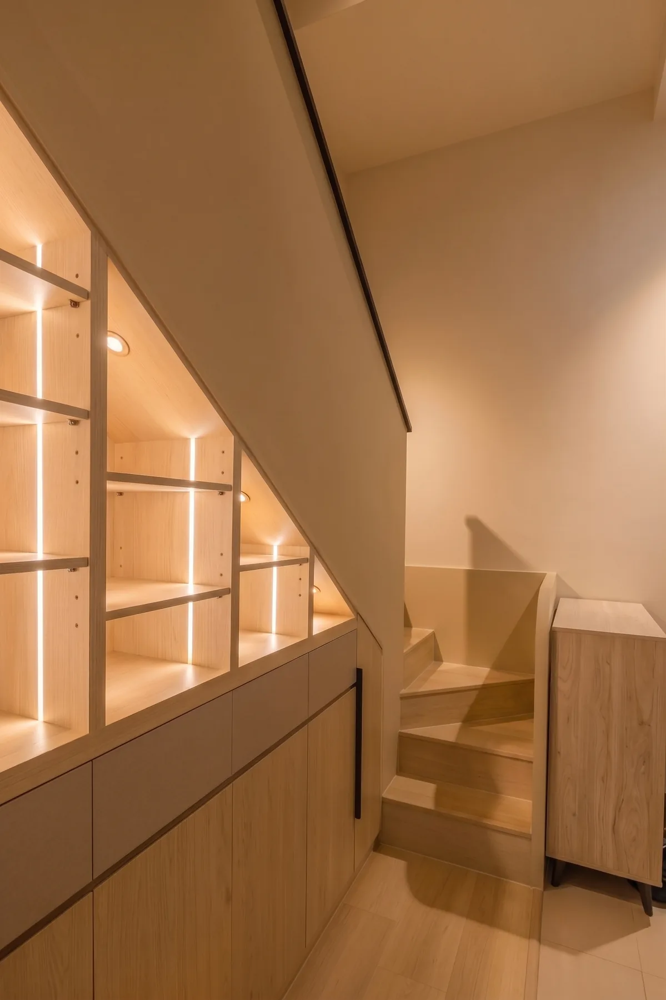
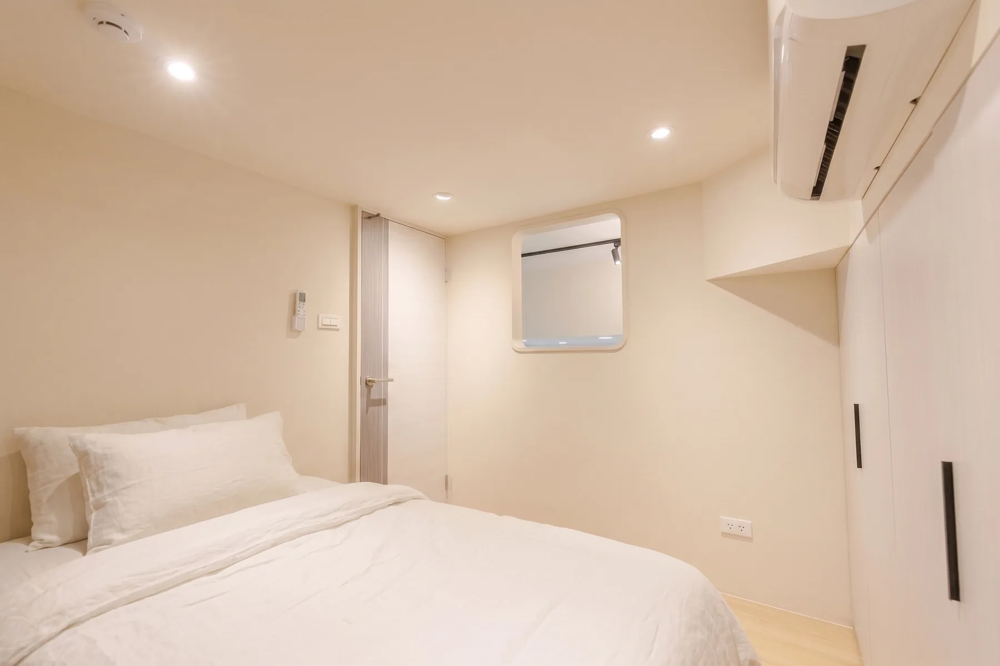
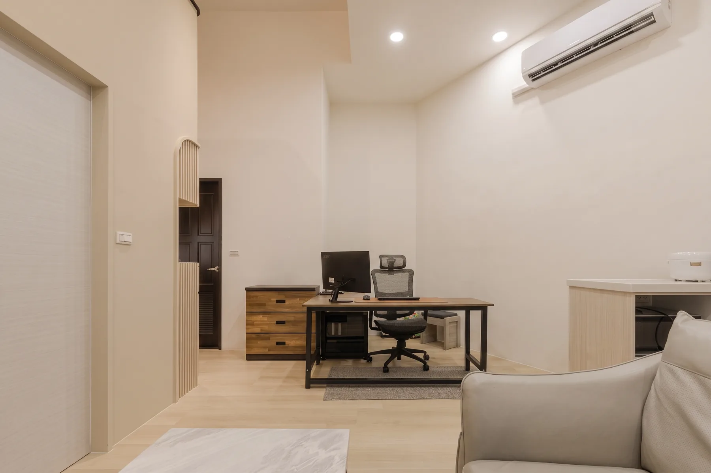

PROJECT 02 TAOYUAN
桃園山鼻二路 30 號
從樓梯、展示收納到工作角落，梳理垂直動線與日常使用，讓每一層都保有清楚節奏。
A HOME IN LAYERS
把垂直動線，整理成生活節奏
以樓梯串接上下樓層，並把展示收納與工作角落放進日常動線。讓不同空間各有用途，也維持清楚、好使用的生活節奏。
- 空間類型
- 住宅室內
- 設計重點
- 樓梯動線、展示收納、工作角落




PROJECT 02 TAOYUAN
從樓梯、展示收納到工作角落，梳理垂直動線與日常使用，讓每一層都保有清楚節奏。
A HOME IN LAYERS
以樓梯串接上下樓層，並把展示收納與工作角落放進日常動線。讓不同空間各有用途，也維持清楚、好使用的生活節奏。


